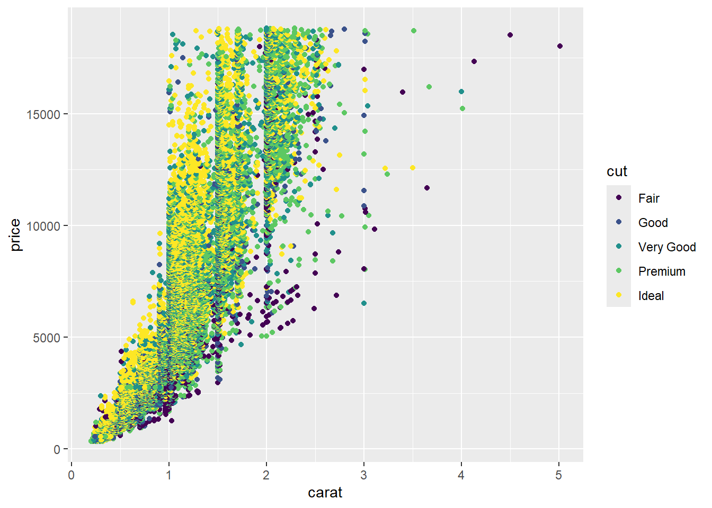
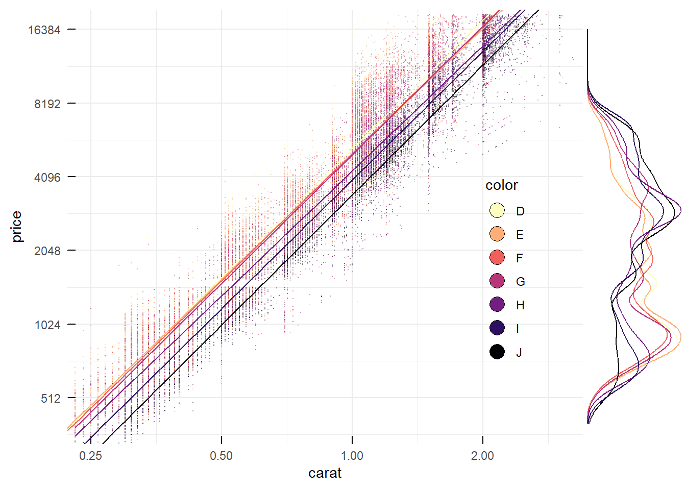
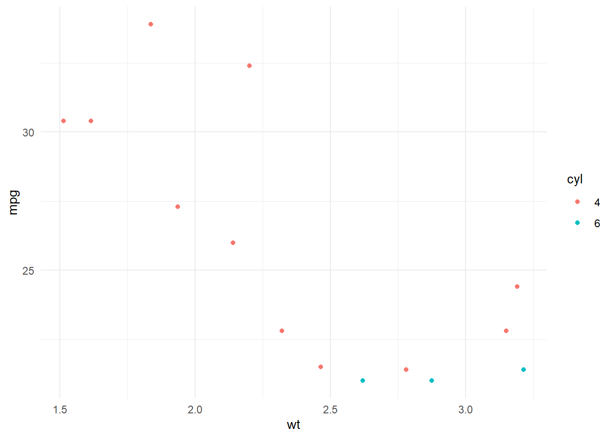
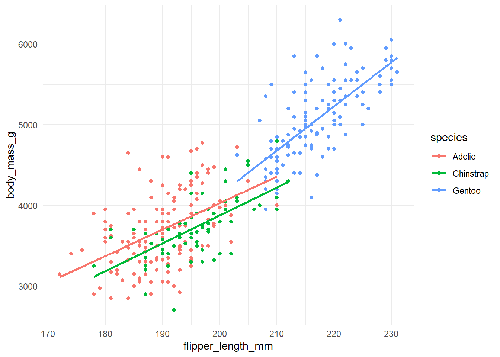
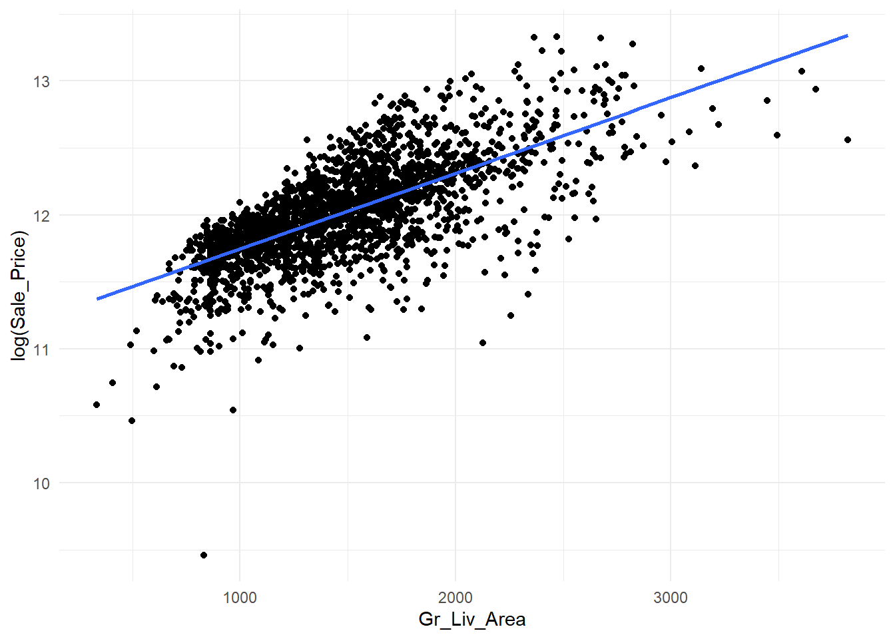
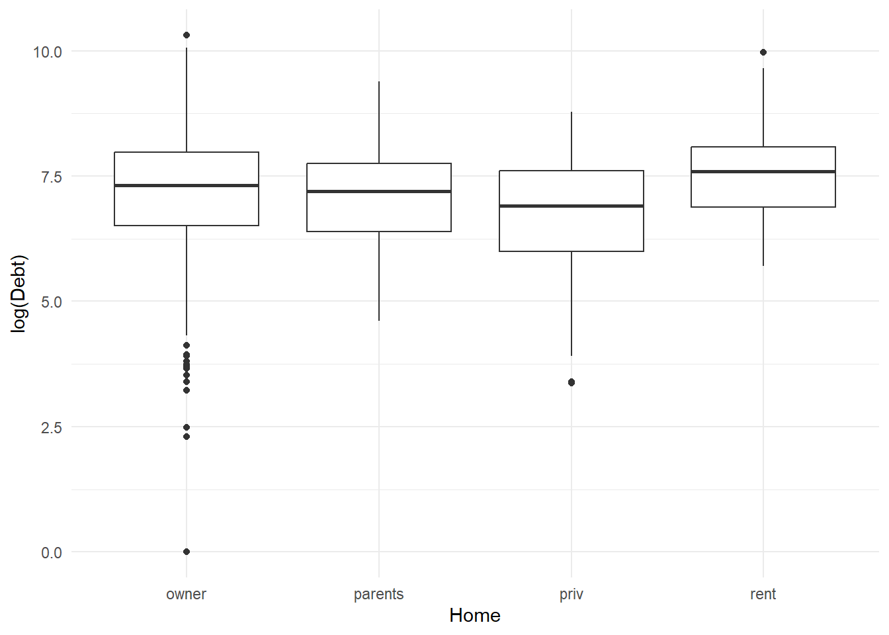

mean(income_data$income)8 The tidyverse
Learning Objectives
By the end of this chapter, you should be able to:
- Explain the purpose and philosophy of the tidyverse and how it differs from base R.
- Use the pipe (
|>) to build clear, step-by-step data analysis workflows. - Apply core dplyr verbs (
select(),filter(),mutate(),group_by(),summarise(),arrange()) to manipulate and summarise data. - Choose tidyverse functions in place of older base R alternatives and justify this choice.
- Create and modify data visualisations using
ggplot2and its layered grammar. - Fit and interpret simple and multiple linear regression models using tidyverse-based workflows.
- Incorporate categorical variables into regression models using tidy data principles.

8.1 Introduction
Last time, we explored the foundations of R: objects, vectors, data frames, base R functions, and some simple visualisations. These skills are essential, but the way we wrote code was often verbose. For example, we used $ to extract columns from data frames and had to write the following just to get an average:
As analyses become more complex, this style can quickly become hard to read and maintain.
To address this, the R community developed the tidyverse: a collection of packages that work together to make data analysis more consistent, readable, and powerful. The tidyverse is like a toolkit where each tool is designed to fit with the others. We’ve already seen one of the packages from the tidyverse (dplyr).
8.2 What is the Tidyverse?
The tidyverse is a family of R packages that share a common philosophy:
- Data is stored in tibbles (modern data frames).
- Functions follow predictable naming conventions.
- The pipe (|>) allows code to be written step by step.
- Packages interoperate seamlessly: what you do in dplyr can be visualised in ggplot2 or reshaped with tidyr.
The core tidyverse includes:
- ggplot2 – data visualisation.
- dplyr – data manipulation (selecting, filtering, summarising).
- tidyr – reshaping data.
- readr – importing CSV files.
- purrr – functional programming (working with lists).
- stringr – string manipulation. forcats – working with factors.
We install the tidyverse once, then load it whenever we want to use it:
install.packages("tidyverse")8.3 The Grammar of Data Manipulation
The tidyverse, especially through the dplyr package, gives us a set of verbs that form the grammar of data manipulation. These include (but not limited to):
- select() – choose columns.
- filter() – choose rows.
- arrange() – reorder rows.
- mutate() – create new variables.
- summarise() (with group_by()) – collapse data into summaries.
These verbs are simple but powerful: by chaining them together with the pipe, we can express very complex data operations clearly. Let’s have a look at an example using the data set diamonds (which comes with tidyverse).
To begin, we’ll create a new project where we can store our script files, data and output.
- I’ll create my project folder in “My Documents”, however feel free to place it wherever you like.
- I’ll call this project “Week 8 – diamonds analysis”.
Let’s now load the diamonds data set into our global environment. Because it’s a package that comes with the ggplot2 package, we’ll begin by loading the ggplot2 package. Or better yet, we’ll load the tidyverse package, which will load ggplot2 (among other packages) as well! I can then use the ? operator to learn more about this data set.
library(tidyverse)
?diamonds
From the information above, we can see that the data set contains the price of over 50,000 round cut diamonds! For each diamond, the most important variable might be the price, but we also have useful information on other variables that we can use to try and explain price.
Let’s begin with a simple task. Suppose I wanted to only look at the diamonds with the best clarity. With these, I would like to determine what cut and colorhas the highest costing diamonds, on average. This can easily be achieved by piping together several dplyr functions:
R Code
# Start with the diamonds data set
diamonds |>
# Look in the Column ‘clarity’ and only include those rows where the value is
# ‘IF’ (which stands for the best clarity apparently)
filter(clarity == "IF") |>
# Group the remaining rows by the combination of cut and color
group_by(cut, color) |>
# For each group, calculate: n: the number of diamonds, and M_price: the mean
# price of the diamonds based upon their groupings from the step above
summarise(
n = n(),
M_price = mean(price)) |>
# Sort the groups so that those with the highest prices appear first.
arrange(desc(M_price))# A tibble: 31 × 4
# Groups: cut [5]
cut color n M_price
<ord> <ord> <int> <dbl>
1 Very Good D 23 10298.
2 Good D 9 10030.
3 Premium D 10 9056.
4 Premium J 12 7026
5 Ideal D 28 6567.
6 Good H 4 5949.
7 Very Good F 67 4677.
8 Premium E 27 4525.
9 Very Good E 43 4333.
10 Very Good I 19 4094.
# ℹ 21 more rows- From this output, we can see that the most expensive diamonds typically have “very good cuts” and are “D color.”
- Although it seems like there’s not too much difference in price between the other two cuts when the color is “D”.
- However, is we start to work our way down the list, we can see more variability.
8.4 ggplot2
The table in the previous section was a good start, but let’s start making some visualisations. After all, a picture is worth 1000 words! Last week, we already learnt about the basics behind ggplot2. As a quick refresher, think of ggplot2 as a function that adds layers upon layers to create plots.

The general structure of a ggplot2 command is:
R Code
ggplot(data = <DATA>, mapping = aes(<AESTHETICS>)) +
<GEOM_FUNCTION>() +
<other layers>Here, is your data frame,
8.4.1 One variable example (numeric)
R Code
# Start with the initial layer (the data)
diamonds |>
# Add an aesthetics layer (the variable)
ggplot(aes(x = price)) +
# Add a layer for the geometry function
geom_histogram()
8.4.2 One variable example (categorical)
R Code
# Start with the initial layer (the data)
diamonds |>
# Add an aesthetics layer (the variable)
ggplot(aes(x = cut)) +
# Add a layer for the geometry function
geom_bar()
8.4.3 Two variable examples
8.4.3.1 Boxplot
R Code
# Start with the initial layer (the data)
diamonds |>
# Add an aesthetics layer (the variable)
ggplot(aes(x = cut, y = price)) +
# Add a layer for the geometry function
geom_boxplot()
8.4.3.2 Scatterplot
R Code
# Start with the initial layer (the data)
diamonds |>
# Add an aesthetics layer (the variable)
ggplot(aes(x = carat, y = price)) +
# Add a layer for the geometry function
geom_point()
8.4.4 Three variable example
R Code
# Start with the initial layer (the data)
diamonds |>
# Add an aesthetics layer (the variable)
ggplot(aes(x = carat, y = price)) +
# Add a layer for the geometry function
geom_point(aes(color = cut)) # cut as a new variable
8.4.5 A more complicated example
Note
Note: You will not be expected to know how to code up something this complicated in this unit. The figure below is just an example of the types of visualisations you can generate when you become proficient with R.
8.4.6 R Code
library(ggExtra)
theme_set(theme_minimal())
p <- diamonds %>%
ggplot(aes(x = carat, y = price, color = color, fill = color)) +
geom_point(alpha = .5, shape = ".") +
# color scale
scale_fill_viridis_d(option = "A", direction = -1) +
scale_color_viridis_d(option = "A", direction = -1) +
theme(legend.position = c(.85, .4)) +
guides(fill = guide_legend(
override.aes = list(
size = 5, alpha = 1, color = "black", shape = 21))) +
# log 2 transformation
scale_x_continuous(trans = "log2") +
# breaks are original value before log transformation
scale_y_continuous(trans = "log2", breaks = 2^c(9:14)) +
annotation_logticks(base = 2) +
# regression calculated upon data after transformation
geom_smooth(
method = "lm", se = F, linewidth = .5, show.legend = F) +
# zoom in
# the limit are original values before the log transformation
coord_cartesian(xlim = c(.25, 3), ylim = c(400, 2^14))
ggMarginal(p, margins = "y", groupColour = T)
8.5 More useful functions
8.5.1 subset() and filter()
When working with data frames, we often want to keep only the rows that satisfy certain conditions. For example, maybe we only want to look at diamonds that are “Ideal” cut, or perhaps we only want diamonds that cost less than $1,000.
There are two main ways to achieve this in R:
- the older base R function
subset() - the modern tidyverse function
filter()
Plain English: Start with the diamonds data set, and return only the rows where the cut is “Ideal” and the price is less than 1000.
subset(diamonds,
cut == "Ideal" & price < 1000)# A tibble: 6,838 × 10
carat cut color clarity depth table price x y z
<dbl> <ord> <ord> <ord> <dbl> <dbl> <int> <dbl> <dbl> <dbl>
1 0.23 Ideal E SI2 61.5 55 326 3.95 3.98 2.43
2 0.23 Ideal J VS1 62.8 56 340 3.93 3.9 2.46
3 0.31 Ideal J SI2 62.2 54 344 4.35 4.37 2.71
4 0.3 Ideal I SI2 62 54 348 4.31 4.34 2.68
5 0.33 Ideal I SI2 61.8 55 403 4.49 4.51 2.78
6 0.33 Ideal I SI2 61.2 56 403 4.49 4.5 2.75
7 0.33 Ideal J SI1 61.1 56 403 4.49 4.55 2.76
8 0.23 Ideal G VS1 61.9 54 404 3.93 3.95 2.44
9 0.32 Ideal I SI1 60.9 55 404 4.45 4.48 2.72
10 0.3 Ideal I SI2 61 59 405 4.3 4.33 2.63
# ℹ 6,828 more rowsPlain English: Start with the diamonds data set, then filter so that only rows remain where cut is “Ideal” and price is less than 1000.
diamonds |>
filter(cut == "Ideal", price < 1000)# A tibble: 6,838 × 10
carat cut color clarity depth table price x y z
<dbl> <ord> <ord> <ord> <dbl> <dbl> <int> <dbl> <dbl> <dbl>
1 0.23 Ideal E SI2 61.5 55 326 3.95 3.98 2.43
2 0.23 Ideal J VS1 62.8 56 340 3.93 3.9 2.46
3 0.31 Ideal J SI2 62.2 54 344 4.35 4.37 2.71
4 0.3 Ideal I SI2 62 54 348 4.31 4.34 2.68
5 0.33 Ideal I SI2 61.8 55 403 4.49 4.51 2.78
6 0.33 Ideal I SI2 61.2 56 403 4.49 4.5 2.75
7 0.33 Ideal J SI1 61.1 56 403 4.49 4.55 2.76
8 0.23 Ideal G VS1 61.9 54 404 3.93 3.95 2.44
9 0.32 Ideal I SI1 60.9 55 404 4.45 4.48 2.72
10 0.3 Ideal I SI2 61 59 405 4.3 4.33 2.63
# ℹ 6,828 more rowsFrom the example above, we can see that both methods will provide us with the same output. However, in modern coding, we prefer to use filter() over subset. This is because filter():
- It integrates seamlessly with other tidyverse verbs (mutate(), summarise(), etc.).
- It reads more clearly when chained with pipes.
- It avoids some of the quirks of subset() (e.g., issues with variable scoping).
8.5.2 taaply() and group_by() -> summarise()
Sometimes we don’t just want to filter rows — we want to calculate summary statistics within groups. For example, what is the average price of diamonds for each cut category? There are two common ways to do this:
- the older base R function tapply()
- the modern tidyverse approach using group_by() and summarise()
Plain English: Take the price column from the diamonds dataset, split it by the categories of cut, and compute the mean for each category. The result is a named vector showing the average price for each type of cut.
tapply(diamonds$price,
diamonds$cut,
mean) Fair Good Very Good Premium Ideal
4358.758 3928.864 3981.760 4584.258 3457.542 Plain English: Start with the diamonds dataset, then:
- Group the rows by the variable cut.
- Within each group, summarise by calculating the mean of price.
diamonds |>
group_by(cut) |>
summarise(mprice = mean(price))# A tibble: 5 × 2
cut mprice
<ord> <dbl>
1 Fair 4359.
2 Good 3929.
3 Very Good 3982.
4 Premium 4584.
5 Ideal 3458.Why prefer group_by() and summarise()?
- It produces a data frame rather than a named vector, which makes it easier to continue working with the result.
- It allows you to calculate multiple summaries at once (e.g., mean, median, standard deviation).
- It integrates seamlessly with other dplyr verbs (filter(), mutate(), arrange()).
8.5.3 ifelse() and case_when()
Often, we want to create a new variable based on conditions. For example, suppose we want to classify diamonds as either “Expensive” if their price is above $10,000, or “Affordable” otherwise.
There are two common ways to do this:
- the older base R function ifelse()
- the modern tidyverse function case_when()
Plain English: Create a new column called category. If price > 10000, assign “Expensive”. Otherwise, assign “Affordable”.
diamonds |>
mutate(category = ifelse(price > 10000,
"Expensive",
"Affordable"))Plain English: Start with the diamonds data set, then create a new column called category:
- If price > 10000, label it “Expensive”.
- Else if price > 5000, label it “Moderate”.
- Otherwise, label it “Affordable”.
diamonds |>
mutate(category = case_when(
price > 10000 ~ "Expensive",
price > 5000 ~ "Moderate",
TRUE ~ "Affordable"
))Why prefer case_when()?
- Handles multiple conditions clearly (no messy nested ifelse() calls).
- Reads like a set of rules or a decision tree.
- Works seamlessly inside tidyverse pipelines.
8.6 Linear Regression in R
Let’s now build several linear regression models with the diamonds data set
8.6.1 Simple Linear Regression
Let’s start with the simplest form: predicting diamond price using just one variable. A natural candidate is carat, since we expect larger diamonds to be more expensive. In a simple linear regression, the model is written as:
\[\text{price}=\beta_0+\beta_1\text{carat}+\epsilon\]
Here, β0 is the intercept, β1 is the slope (the expected change in price for each one-unit increase in carat), and ϵ captures the error (the variation in price not explained by carat). By fitting this model, we will see whether carat size alone is a good predictor of price, and how well a straight line captures the relationship.
In R, we can use the lm() function to build a linear model. This function has two required arguments:
- ‘formula’ (how you building the model)
- ‘data’ (the data set)
Using our diamonds data set, let’s fit a model for price using only carat as a variable
R Code
lm(
formula = price ~ carat,
data = diamonds
)
Call:
lm(formula = price ~ carat, data = diamonds)
Coefficients:
(Intercept) carat
-2256 7756 When you run the lm() function (as we have above), it only outputs the beta coefficients. Here, we can use these to construct the model as
\[\text{price}=-2256+(7756\times\text{carat})+\epsilon\]
If we wanted more information on the model, we should begin by saving the model as an object. Then we can use other functions, such as summary() to learn more about our results.
R Code
model1 <-
lm(
formula = price ~ carat,
data = diamonds
)
summary(model1)
Call:
lm(formula = price ~ carat, data = diamonds)
Residuals:
Min 1Q Median 3Q Max
-18585.3 -804.8 -18.9 537.4 12731.7
Coefficients:
Estimate Std. Error t value Pr(>|t|)
(Intercept) -2256.36 13.06 -172.8 <2e-16 ***
carat 7756.43 14.07 551.4 <2e-16 ***
---
Signif. codes: 0 '***' 0.001 '**' 0.01 '*' 0.05 '.' 0.1 ' ' 1
Residual standard error: 1549 on 53938 degrees of freedom
Multiple R-squared: 0.8493, Adjusted R-squared: 0.8493
F-statistic: 3.041e+05 on 1 and 53938 DF, p-value: < 2.2e-16The summary() function transforms our regression results into a table that’s quite similar to the one we saw when we ran these in Excel (with Standard Errors, t values and p values.) Below the table we also have fit metrics such as R squared.
8.6.2 Multiple linear regression with numeric predictors
Diamonds are more than just their weight. Features such as depth (the height of the diamond relative to its width) and table (the size of the flat top facet) can also influence price. In this section, we extend the model to include several numeric predictors:
\[\text{price}=\beta_0+\beta_1\text{carat}+\beta_2\text{depth}+\beta_3\text{table}+\epsilon\]
With multiple predictors, the model can capture more of the variation in diamond prices. However, we must be careful as adding variables can increase complexity without necessarily improving predictive power. This is where interpretation and statistical judgment come in.
R Code
model2 <-
lm(
formula = price ~ carat + depth + table,
data = diamonds
)
summary(model2)
Call:
lm(formula = price ~ carat + depth + table, data = diamonds)
Residuals:
Min 1Q Median 3Q Max
-18288.0 -785.9 -33.2 527.2 12486.7
Coefficients:
Estimate Std. Error t value Pr(>|t|)
(Intercept) 13003.441 390.918 33.26 <2e-16 ***
carat 7858.771 14.151 555.36 <2e-16 ***
depth -151.236 4.820 -31.38 <2e-16 ***
table -104.473 3.141 -33.26 <2e-16 ***
---
Signif. codes: 0 '***' 0.001 '**' 0.01 '*' 0.05 '.' 0.1 ' ' 1
Residual standard error: 1526 on 53936 degrees of freedom
Multiple R-squared: 0.8537, Adjusted R-squared: 0.8537
F-statistic: 1.049e+05 on 3 and 53936 DF, p-value: < 2.2e-168.6.3 Multiple linear regression with both numeric and categorical predictors
So far, we have only used numeric predictors. But the diamonds dataset also contains categorical features such as cut, color, and clarity. These are qualitative measures that buyers care deeply about, and they can significantly affect the price.
To incorporate categorical predictors into regression, we use dummy variables (also called indicator variables). For example, “cut” has five categories: Fair, Good, Very Good, Premium, and Ideal. The model will estimate how much each cut category increases or decreases the expected price, relative to a reference category.
\[\text{price}=\beta_0+\beta_1\text{carat}+\beta_2\text{depth}+\beta_3\text{table}+\beta4\text{cut}+\epsilon\]
To make our life a bit easier, and to also showcase some more dplyr functions, we’re going to reduce the 5 categories in the cut variable down to 3, before passing it into the model. Have a look at the code below and see if you can understand its logic (don’t worry if you can’t get it now, as Minh will go through it during the lecture):
R Code
# Note here I am creating a new data set called diamonds2
diamonds2 <-
diamonds |>
mutate(cut2 = case_when(
cut %in% c("Fair","Good") ~ "Level 1",
cut %in% c("Very Good") ~ "Level 2",
cut %in% c("Premium", "Ideal") ~ "Level 3"
))# Build a model with the new variable and new data set
model3 <- lm(price ~ carat + depth + table + cut2, data = diamonds2)
# view results
summary(model3)
Call:
lm(formula = price ~ carat + depth + table + cut2, data = diamonds2)
Residuals:
Min 1Q Median 3Q Max
-18042.0 -779.9 -32.8 517.9 12518.8
Coefficients:
Estimate Std. Error t value Pr(>|t|)
(Intercept) 8083.652 444.034 18.20 <2e-16 ***
carat 7861.277 14.076 558.47 <2e-16 ***
depth -104.820 5.195 -20.18 <2e-16 ***
table -76.998 3.376 -22.81 <2e-16 ***
cut2Level 2 501.226 24.240 20.68 <2e-16 ***
cut2Level 3 550.542 22.876 24.07 <2e-16 ***
---
Signif. codes: 0 '***' 0.001 '**' 0.01 '*' 0.05 '.' 0.1 ' ' 1
Residual standard error: 1518 on 53934 degrees of freedom
Multiple R-squared: 0.8553, Adjusted R-squared: 0.8553
F-statistic: 6.374e+04 on 5 and 53934 DF, p-value: < 2.2e-168.6.4 Comparing models
With several models at hand, a natural question arises: Which model is best?
There are many ways to compare models:
- Goodness of fit: How much variation in price does the model explain? (measured by R2)
- Parsimony: Does the model use predictors efficiently, without overcomplicating things?
- Prediction error: How well does the model perform on unseen data?
Sometimes a simpler model with fewer predictors is preferable if it explains nearly as much as a complex one. Other times, adding categorical variables or interactions is worth it because it greatly improves predictive accuracy.
Looking at the output from the 3 models above, which model do you think is best?
| Model 1 | Model 2 | Model 3 | |
| Predictors | Estimates | Estimates | Estimates |
| (Intercept) | -2256.36 *** (-2281.95 – -2230.77) |
13003.44 *** (12237.24 – 13769.64) |
8083.65 *** (7213.34 – 8953.96) |
| carat | 7756.43 *** (7728.86 – 7784.00) |
7858.77 *** (7831.03 – 7886.51) |
7861.28 *** (7833.69 – 7888.87) |
| depth | -151.24 *** (-160.68 – -141.79) |
-104.82 *** (-115.00 – -94.64) |
|
| table | -104.47 *** (-110.63 – -98.32) |
-77.00 *** (-83.62 – -70.38) |
|
| cut2 [Level 2] | 501.23 *** (453.71 – 548.74) |
||
| cut2 [Level 3] | 550.54 *** (505.70 – 595.38) |
||
| Observations | 53940 | 53940 | 53940 |
| R2 / R2 adjusted | 0.849 / 0.849 | 0.854 / 0.854 | 0.855 / 0.855 |
| * p<0.05 ** p<0.01 *** p<0.001 | |||
8.7 Summary
In this chapter, we introduced the tidyverse as a modern, coherent approach to data analysis in R. Rather than relying on verbose base R syntax, the tidyverse encourages clear, readable workflows built around pipes and a small set of consistent verbs. By working with tibbles and chaining operations step by step, complex analyses become easier to write, understand, and modify.
We focused on the core ideas of data manipulation using dplyr, including selecting variables, filtering observations, creating new variables, grouping data, and producing summaries. Along the way, we compared older base R functions (such as subset(), tapply(), and ifelse()) with their tidyverse counterparts, highlighting why the tidyverse approach is generally preferred in modern analysis.
We also revisited ggplot2, reinforcing the idea of plots as layered objects that map data to visual aesthetics. Through a series of examples, we showed how the tidyverse workflow naturally extends from data manipulation into data visualisation.
Finally, we demonstrated how tidyverse tools integrate seamlessly with linear regression, from simple models to more complex models that include multiple numeric predictors and categorical variables. By combining tidy data manipulation, clear visualisation, and modelling, the tidyverse provides a powerful and flexible foundation for the analyses you will encounter throughout the rest of this unit.
8.8 Exercises
Question 1
We will use the built-in mtcars dataset, which contains fuel consumption and design characteristics for 32 cars. Write some code in R to complete the following tasks:
- Load the tidyverse package
- Load the
mtcarsdataset and inspect it.- How many rows and columns does the dataset have?
- What does each row represent?
- Which variables appear to be numeric?
- Convert
mtcarsinto a tibble and store it as a new object calledcars. - Convert
cyl(number of cylinders) to a factor. - Create a new data set (call it
cars2) that:- Includes only cars with 4 or 6 cylinders.
- Includes only cars with fuel efficiency (
mpg) greater than 20 - Keeps only the variables
model,mpg,cyl,hpandwt.
- Using your new data set, create a new categorical variable called
efficiency:Highifmpgis greater than 25,Moderateifmpgis between 20 and 25,Lowotherwise
- Group the data by
cyland calculate:- the average number of cars (
n), - the average fuel efficienty (
mean_mpg), - the average horsepower (
mean_hp)
- the average number of cars (
- Arrange your results from part g so that the group with the highest average fuel efficiency appears first
- Create a scatterplot showing the relationship between:
- car weight (
wt) on the x-axis, - fuel efficency (
mpg) on the y-axis - color the points by the number of cylinders (
cyl)
- car weight (
Click for Solutions
# a.
library(tidyverse)# b.
str(mtcars)'data.frame': 32 obs. of 11 variables:
$ mpg : num 21 21 22.8 21.4 18.7 18.1 14.3 24.4 22.8 19.2 ...
$ cyl : num 6 6 4 6 8 6 8 4 4 6 ...
$ disp: num 160 160 108 258 360 ...
$ hp : num 110 110 93 110 175 105 245 62 95 123 ...
$ drat: num 3.9 3.9 3.85 3.08 3.15 2.76 3.21 3.69 3.92 3.92 ...
$ wt : num 2.62 2.88 2.32 3.21 3.44 ...
$ qsec: num 16.5 17 18.6 19.4 17 ...
$ vs : num 0 0 1 1 0 1 0 1 1 1 ...
$ am : num 1 1 1 0 0 0 0 0 0 0 ...
$ gear: num 4 4 4 3 3 3 3 4 4 4 ...
$ carb: num 4 4 1 1 2 1 4 2 2 4 ...# c.
cars <- as_tibble(mtcars, rownames = "model")# d.
cars <-
cars |>
mutate(cyl = factor(cyl))# e.
cars2 <-
cars |>
filter(cyl %in% c("4", "6"),
mpg > 20) |>
select(model, mpg, cyl, hp, wt)# f.
cars2 <-
cars2 |>
mutate(
efficiency = case_when(
mpg > 25 ~ "High",
mpg >= 20 & mpg <= 25 ~ "Moderate",
TRUE ~ "Low"
)
)# g./h.
cars2 |>
group_by(cyl) |>
summarise(
n = n(),
mean_mpg = mean(mpg),
mean_hp = mean(hp)
) |>
arrange(desc(mean_mpg))# A tibble: 2 × 4
cyl n mean_mpg mean_hp
<fct> <int> <dbl> <dbl>
1 4 11 26.7 82.6
2 6 3 21.1 110 # i.
cars2 |>
ggplot(aes(x = wt, y = mpg, color = cyl)) +
geom_point()
Question 2
In this exercise, you will use the palmerpenguins dataset to practise tidyverse data handling and fit regression models. The dataset contains measurements on penguins from three species.
To begin you’ll need to have the palmerpenguins package installed.
install.packages("palmerpenguins")Once you have installed this package, write some code to complete the following tasks:
- Load the tidyverse and palmerpenguins package
- Load the
penguinsdataset. Inspect the data and determine:- How many rows and columns are there?
- Which variables are numeric?
- Whaich variables are categorical?
- Create a new dataset called
penguins2that:- Keeps only these variables:
species,island,bill_length_mm,bill_depth_mm,flipper_length_mm,body_mass_g - Removes rows with missing values in any of these variables
- Keeps only these variables:
- For each species, calculate:
- number of penguins (
n) - mean body mass (
mean_mass) - standard deviation of body mass (
sd_mass)
- number of penguins (
- Create a scatterplot of flipper_length_mm (x-axis) vs body_mass_g (y-axis), coloured by species. Add a regression line for each species.
- Fit a simple linear regression model predicting body mass from flipper length and store it as
m1 - Use the
summary()function to inspectm1. Comment on each coefficient. - Fit a multiple regression model predicting body mass from flipper length and bill length, and call it
m2. Inspect the model and comment on each coefficient. - Fit a model that includes species as a categorical predictor, plus flipper length, and call it
m3. Inspect the model and comment on each coefficient. - Fit an interaction model that includes flipper length, species, and the interaction between flipper_length and species, and store it as
m4. Inspect the model and comment on each coefficient. - Compare all four models using \(R^2\) and \(\text{Adjusted } R^2\). Which model seems best, and why?
Click for Solutions
# a.
library(tidyverse)
library(palmerpenguins)# b.
str(penguins)tibble [344 × 7] (S3: tbl_df/tbl/data.frame)
$ species : Factor w/ 3 levels "Adelie","Chinstrap",..: 1 1 1 1 1 1 1 1 1 1 ...
$ island : Factor w/ 3 levels "Biscoe","Dream",..: 3 3 3 3 3 3 3 3 3 3 ...
$ bill_length_mm : num [1:344] 39.1 39.5 40.3 NA 36.7 39.3 38.9 39.2 34.1 42 ...
$ bill_depth_mm : num [1:344] 18.7 17.4 18 NA 19.3 20.6 17.8 19.6 18.1 20.2 ...
$ flipper_length_mm: int [1:344] 181 186 195 NA 193 190 181 195 193 190 ...
$ body_mass_g : int [1:344] 3750 3800 3250 NA 3450 3650 3625 4675 3475 4250 ...
$ sex : Factor w/ 2 levels "female","male": 2 1 1 NA 1 2 1 2 NA NA ...# c.
penguins2 <-
penguins |>
select(species,
island,
bill_length_mm,
bill_depth_mm,
flipper_length_mm,
body_mass_g) |>
na.omit()# d.
penguins2 |>
group_by(species) |>
summarise(
n = n(),
mean_mass = mean(body_mass_g),
sd_mass = sd(body_mass_g)
)# A tibble: 3 × 4
species n mean_mass sd_mass
<fct> <int> <dbl> <dbl>
1 Adelie 151 3701. 459.
2 Chinstrap 68 3733. 384.
3 Gentoo 123 5076. 504.# e.
penguins2 |>
ggplot(aes(x = flipper_length_mm, y = body_mass_g, color = species)) +
geom_point() +
geom_smooth(method = 'lm', se = F)
# f.
m1 <- lm(body_mass_g ~ flipper_length_mm, penguins2)# g.
summary(m1)
Call:
lm(formula = body_mass_g ~ flipper_length_mm, data = penguins2)
Residuals:
Min 1Q Median 3Q Max
-1058.80 -259.27 -26.88 247.33 1288.69
Coefficients:
Estimate Std. Error t value Pr(>|t|)
(Intercept) -5780.831 305.815 -18.90 <2e-16 ***
flipper_length_mm 49.686 1.518 32.72 <2e-16 ***
---
Signif. codes: 0 '***' 0.001 '**' 0.01 '*' 0.05 '.' 0.1 ' ' 1
Residual standard error: 394.3 on 340 degrees of freedom
Multiple R-squared: 0.759, Adjusted R-squared: 0.7583
F-statistic: 1071 on 1 and 340 DF, p-value: < 2.2e-16# h.
m2 <- lm(body_mass_g ~ flipper_length_mm + bill_length_mm, penguins2)
summary(m2)
Call:
lm(formula = body_mass_g ~ flipper_length_mm + bill_length_mm,
data = penguins2)
Residuals:
Min 1Q Median 3Q Max
-1090.5 -285.7 -32.1 244.2 1287.5
Coefficients:
Estimate Std. Error t value Pr(>|t|)
(Intercept) -5736.897 307.959 -18.629 <2e-16 ***
flipper_length_mm 48.145 2.011 23.939 <2e-16 ***
bill_length_mm 6.047 5.180 1.168 0.244
---
Signif. codes: 0 '***' 0.001 '**' 0.01 '*' 0.05 '.' 0.1 ' ' 1
Residual standard error: 394.1 on 339 degrees of freedom
Multiple R-squared: 0.76, Adjusted R-squared: 0.7585
F-statistic: 536.6 on 2 and 339 DF, p-value: < 2.2e-16# i.
m3 <- lm(body_mass_g ~ species + flipper_length_mm, penguins2)
summary(m3)
Call:
lm(formula = body_mass_g ~ species + flipper_length_mm, data = penguins2)
Residuals:
Min 1Q Median 3Q Max
-927.70 -254.82 -23.92 241.16 1191.68
Coefficients:
Estimate Std. Error t value Pr(>|t|)
(Intercept) -4031.477 584.151 -6.901 2.55e-11 ***
speciesChinstrap -206.510 57.731 -3.577 0.000398 ***
speciesGentoo 266.810 95.264 2.801 0.005392 **
flipper_length_mm 40.705 3.071 13.255 < 2e-16 ***
---
Signif. codes: 0 '***' 0.001 '**' 0.01 '*' 0.05 '.' 0.1 ' ' 1
Residual standard error: 375.5 on 338 degrees of freedom
Multiple R-squared: 0.7826, Adjusted R-squared: 0.7807
F-statistic: 405.7 on 3 and 338 DF, p-value: < 2.2e-16# j.
m4 <- lm(body_mass_g ~ species + flipper_length_mm + species*flipper_length_mm, penguins2)
summary(m4)
Call:
lm(formula = body_mass_g ~ species + flipper_length_mm + species *
flipper_length_mm, data = penguins2)
Residuals:
Min 1Q Median 3Q Max
-911.18 -251.93 -31.77 197.82 1144.81
Coefficients:
Estimate Std. Error t value Pr(>|t|)
(Intercept) -2535.837 879.468 -2.883 0.00419 **
speciesChinstrap -501.359 1523.459 -0.329 0.74229
speciesGentoo -4251.444 1427.332 -2.979 0.00311 **
flipper_length_mm 32.832 4.627 7.095 7.69e-12 ***
speciesChinstrap:flipper_length_mm 1.742 7.856 0.222 0.82467
speciesGentoo:flipper_length_mm 21.791 6.941 3.139 0.00184 **
---
Signif. codes: 0 '***' 0.001 '**' 0.01 '*' 0.05 '.' 0.1 ' ' 1
Residual standard error: 370.6 on 336 degrees of freedom
Multiple R-squared: 0.7896, Adjusted R-squared: 0.7864
F-statistic: 252.2 on 5 and 336 DF, p-value: < 2.2e-16# k.
data.frame(
model = 1:4,
R2 = c(
summary(m1)$r.squared,
summary(m2)$r.squared,
summary(m3)$r.squared,
summary(m4)$r.squared),
Adj.R2 = c(
summary(m1)$adj.r.squared,
summary(m2)$adj.r.squared,
summary(m3)$adj.r.squared,
summary(m4)$adj.r.squared
)
) |>
mutate_all(round, 3) model R2 Adj.R2
1 1 0.759 0.758
2 2 0.760 0.759
3 3 0.783 0.781
4 4 0.790 0.786
Question 3
In this exercise, you will use the ames dataset to practise tidyverse data handling and fit regression models. The dataset contains sales data for 2,930 properties in Ames IA.
To begin you’ll need to have the modeldata package installed.
install.packages("modeldata")Once you have installed this package, write some code to complete the following tasks:
- Load the tidyverse and modeldata packages
- Load the
amesdataset. Inspect the data and determine how many rows and columns are there. - What does the variable
Sale_Pricerepresent? - Create a new dataset called
ames2that:- Keeps only the variables:
Sale_Price,Gr_Liv_Area,Overall_Cond,Year_BuiltandNeighborhood - Removes rows with missing values
- Keeps only the variables:
- For each
Neighborhood, calculate:- the number of houses (
n) - the average sale price (
mean_price)
- the number of houses (
- Create a new dataset that keeps neighborhoods with at least 100 houses, and call this
ames3. - Create a scatterplot such that:
- living area (
Gr_Liv_Area) is on the x-axis - sale price (
Sale_Price) is on the y-axis - Add a regression line
- log transform the y-axis
- Only show houses where
Gr_Liv_Areais less than 4000
- living area (
- Fit a simple linear regression model predicting sale price from living area and store the model as
m1. Inspect m1 and interpret the coefficients. - Fit a multiple regression model predicting sale price from living area, overall condition and year built, and store the model as
m2. Inspect m2 and interpret the coefficients. - Create a new variable (call it
Year_Cat) that groups houses into:Old(built before 1970)Modern(built from 1970 onward)
- Refit
m2except replace year built with the newly created categorical variable from the previous question. Call this modelm2b. Inspect m2b and interpret the coefficients. - Compare m1, m2 and m2b using \(\text{adjusted } R^2\). Which model provides the best balance between fit and complexity?
Click for Solutions
# a.
library(tidyverse)
library(modeldata)# b. / c.
str(ames)tibble [2,930 × 74] (S3: tbl_df/tbl/data.frame)
$ MS_SubClass : Factor w/ 16 levels "One_Story_1946_and_Newer_All_Styles",..: 1 1 1 1 6 6 12 12 12 6 ...
$ MS_Zoning : Factor w/ 7 levels "Floating_Village_Residential",..: 3 2 3 3 3 3 3 3 3 3 ...
$ Lot_Frontage : num [1:2930] 141 80 81 93 74 78 41 43 39 60 ...
$ Lot_Area : int [1:2930] 31770 11622 14267 11160 13830 9978 4920 5005 5389 7500 ...
$ Street : Factor w/ 2 levels "Grvl","Pave": 2 2 2 2 2 2 2 2 2 2 ...
$ Alley : Factor w/ 3 levels "Gravel","No_Alley_Access",..: 2 2 2 2 2 2 2 2 2 2 ...
$ Lot_Shape : Factor w/ 4 levels "Regular","Slightly_Irregular",..: 2 1 2 1 2 2 1 2 2 1 ...
$ Land_Contour : Factor w/ 4 levels "Bnk","HLS","Low",..: 4 4 4 4 4 4 4 2 4 4 ...
$ Utilities : Factor w/ 3 levels "AllPub","NoSeWa",..: 1 1 1 1 1 1 1 1 1 1 ...
$ Lot_Config : Factor w/ 5 levels "Corner","CulDSac",..: 1 5 1 1 5 5 5 5 5 5 ...
$ Land_Slope : Factor w/ 3 levels "Gtl","Mod","Sev": 1 1 1 1 1 1 1 1 1 1 ...
$ Neighborhood : Factor w/ 29 levels "North_Ames","College_Creek",..: 1 1 1 1 7 7 17 17 17 7 ...
$ Condition_1 : Factor w/ 9 levels "Artery","Feedr",..: 3 2 3 3 3 3 3 3 3 3 ...
$ Condition_2 : Factor w/ 8 levels "Artery","Feedr",..: 3 3 3 3 3 3 3 3 3 3 ...
$ Bldg_Type : Factor w/ 5 levels "OneFam","TwoFmCon",..: 1 1 1 1 1 1 5 5 5 1 ...
$ House_Style : Factor w/ 8 levels "One_and_Half_Fin",..: 3 3 3 3 8 8 3 3 3 8 ...
$ Overall_Cond : Factor w/ 10 levels "Very_Poor","Poor",..: 5 6 6 5 5 6 5 5 5 5 ...
$ Year_Built : int [1:2930] 1960 1961 1958 1968 1997 1998 2001 1992 1995 1999 ...
$ Year_Remod_Add : int [1:2930] 1960 1961 1958 1968 1998 1998 2001 1992 1996 1999 ...
$ Roof_Style : Factor w/ 6 levels "Flat","Gable",..: 4 2 4 4 2 2 2 2 2 2 ...
$ Roof_Matl : Factor w/ 8 levels "ClyTile","CompShg",..: 2 2 2 2 2 2 2 2 2 2 ...
$ Exterior_1st : Factor w/ 16 levels "AsbShng","AsphShn",..: 4 14 15 4 14 14 6 7 6 14 ...
$ Exterior_2nd : Factor w/ 17 levels "AsbShng","AsphShn",..: 11 15 16 4 15 15 6 7 6 15 ...
$ Mas_Vnr_Type : Factor w/ 5 levels "BrkCmn","BrkFace",..: 5 4 2 4 4 2 4 4 4 4 ...
$ Mas_Vnr_Area : num [1:2930] 112 0 108 0 0 20 0 0 0 0 ...
$ Exter_Cond : Factor w/ 5 levels "Excellent","Fair",..: 5 5 5 5 5 5 5 5 5 5 ...
$ Foundation : Factor w/ 6 levels "BrkTil","CBlock",..: 2 2 2 2 3 3 3 3 3 3 ...
$ Bsmt_Cond : Factor w/ 6 levels "Excellent","Fair",..: 3 6 6 6 6 6 6 6 6 6 ...
$ Bsmt_Exposure : Factor w/ 5 levels "Av","Gd","Mn",..: 2 4 4 4 4 4 3 4 4 4 ...
$ BsmtFin_Type_1 : Factor w/ 7 levels "ALQ","BLQ","GLQ",..: 2 6 1 1 3 3 3 1 3 7 ...
$ BsmtFin_SF_1 : num [1:2930] 2 6 1 1 3 3 3 1 3 7 ...
$ BsmtFin_Type_2 : Factor w/ 7 levels "ALQ","BLQ","GLQ",..: 7 4 7 7 7 7 7 7 7 7 ...
$ BsmtFin_SF_2 : num [1:2930] 0 144 0 0 0 0 0 0 0 0 ...
$ Bsmt_Unf_SF : num [1:2930] 441 270 406 1045 137 ...
$ Total_Bsmt_SF : num [1:2930] 1080 882 1329 2110 928 ...
$ Heating : Factor w/ 6 levels "Floor","GasA",..: 2 2 2 2 2 2 2 2 2 2 ...
$ Heating_QC : Factor w/ 5 levels "Excellent","Fair",..: 2 5 5 1 3 1 1 1 1 3 ...
$ Central_Air : Factor w/ 2 levels "N","Y": 2 2 2 2 2 2 2 2 2 2 ...
$ Electrical : Factor w/ 6 levels "FuseA","FuseF",..: 5 5 5 5 5 5 5 5 5 5 ...
$ First_Flr_SF : int [1:2930] 1656 896 1329 2110 928 926 1338 1280 1616 1028 ...
$ Second_Flr_SF : int [1:2930] 0 0 0 0 701 678 0 0 0 776 ...
$ Gr_Liv_Area : int [1:2930] 1656 896 1329 2110 1629 1604 1338 1280 1616 1804 ...
$ Bsmt_Full_Bath : num [1:2930] 1 0 0 1 0 0 1 0 1 0 ...
$ Bsmt_Half_Bath : num [1:2930] 0 0 0 0 0 0 0 0 0 0 ...
$ Full_Bath : int [1:2930] 1 1 1 2 2 2 2 2 2 2 ...
$ Half_Bath : int [1:2930] 0 0 1 1 1 1 0 0 0 1 ...
$ Bedroom_AbvGr : int [1:2930] 3 2 3 3 3 3 2 2 2 3 ...
$ Kitchen_AbvGr : int [1:2930] 1 1 1 1 1 1 1 1 1 1 ...
$ TotRms_AbvGrd : int [1:2930] 7 5 6 8 6 7 6 5 5 7 ...
$ Functional : Factor w/ 8 levels "Maj1","Maj2",..: 8 8 8 8 8 8 8 8 8 8 ...
$ Fireplaces : int [1:2930] 2 0 0 2 1 1 0 0 1 1 ...
$ Garage_Type : Factor w/ 7 levels "Attchd","Basment",..: 1 1 1 1 1 1 1 1 1 1 ...
$ Garage_Finish : Factor w/ 4 levels "Fin","No_Garage",..: 1 4 4 1 1 1 1 3 3 1 ...
$ Garage_Cars : num [1:2930] 2 1 1 2 2 2 2 2 2 2 ...
$ Garage_Area : num [1:2930] 528 730 312 522 482 470 582 506 608 442 ...
$ Garage_Cond : Factor w/ 6 levels "Excellent","Fair",..: 6 6 6 6 6 6 6 6 6 6 ...
$ Paved_Drive : Factor w/ 3 levels "Dirt_Gravel",..: 2 3 3 3 3 3 3 3 3 3 ...
$ Wood_Deck_SF : int [1:2930] 210 140 393 0 212 360 0 0 237 140 ...
$ Open_Porch_SF : int [1:2930] 62 0 36 0 34 36 0 82 152 60 ...
$ Enclosed_Porch : int [1:2930] 0 0 0 0 0 0 170 0 0 0 ...
$ Three_season_porch: int [1:2930] 0 0 0 0 0 0 0 0 0 0 ...
$ Screen_Porch : int [1:2930] 0 120 0 0 0 0 0 144 0 0 ...
$ Pool_Area : int [1:2930] 0 0 0 0 0 0 0 0 0 0 ...
$ Pool_QC : Factor w/ 5 levels "Excellent","Fair",..: 4 4 4 4 4 4 4 4 4 4 ...
$ Fence : Factor w/ 5 levels "Good_Privacy",..: 5 3 5 5 3 5 5 5 5 5 ...
$ Misc_Feature : Factor w/ 6 levels "Elev","Gar2",..: 3 3 2 3 3 3 3 3 3 3 ...
$ Misc_Val : int [1:2930] 0 0 12500 0 0 0 0 0 0 0 ...
$ Mo_Sold : int [1:2930] 5 6 6 4 3 6 4 1 3 6 ...
$ Year_Sold : int [1:2930] 2010 2010 2010 2010 2010 2010 2010 2010 2010 2010 ...
$ Sale_Type : Factor w/ 10 levels "COD","Con","ConLD",..: 10 10 10 10 10 10 10 10 10 10 ...
$ Sale_Condition : Factor w/ 6 levels "Abnorml","AdjLand",..: 5 5 5 5 5 5 5 5 5 5 ...
$ Sale_Price : int [1:2930] 215000 105000 172000 244000 189900 195500 213500 191500 236500 189000 ...
$ Longitude : num [1:2930] -93.6 -93.6 -93.6 -93.6 -93.6 ...
$ Latitude : num [1:2930] 42.1 42.1 42.1 42.1 42.1 ...# d.
ames2 <-
ames |>
select(Sale_Price, Gr_Liv_Area, Overall_Cond, Year_Built, Neighborhood) |>
na.omit()# e.
ames2 |>
group_by(Neighborhood) |>
summarise(n = n(),
mean_price = mean(Sale_Price))# A tibble: 28 × 3
Neighborhood n mean_price
<fct> <int> <dbl>
1 North_Ames 443 145097.
2 College_Creek 267 201803.
3 Old_Town 239 123992.
4 Edwards 194 130843.
5 Somerset 182 229707.
6 Northridge_Heights 166 322018.
7 Gilbert 165 190647.
8 Sawyer 151 136751.
9 Northwest_Ames 131 188407.
10 Sawyer_West 125 184070.
# ℹ 18 more rows# f.
ames3 <-
ames2 |>
group_by(Neighborhood) |>
mutate(n = n()) |>
filter(n > 100)# g.
ames3 |>
filter(Gr_Liv_Area < 4000) |>
ggplot(aes(x = Gr_Liv_Area, y = log(Sale_Price))) +
geom_point() +
geom_smooth(method = 'lm', se = F)
# h.
m1 <- lm(Sale_Price ~ Gr_Liv_Area, ames3)
summary(m1)
Call:
lm(formula = Sale_Price ~ Gr_Liv_Area, data = ames3)
Residuals:
Min 1Q Median 3Q Max
-436045 -25949 -2069 19287 345482
Coefficients:
Estimate Std. Error t value Pr(>|t|)
(Intercept) 28283.051 3535.397 8.00 1.92e-15 ***
Gr_Liv_Area 100.631 2.284 44.06 < 2e-16 ***
---
Signif. codes: 0 '***' 0.001 '**' 0.01 '*' 0.05 '.' 0.1 ' ' 1
Residual standard error: 53040 on 2386 degrees of freedom
Multiple R-squared: 0.4487, Adjusted R-squared: 0.4484
F-statistic: 1942 on 1 and 2386 DF, p-value: < 2.2e-16# i.
m2 <- lm(Sale_Price ~ Gr_Liv_Area + Overall_Cond + Year_Built, ames3)
summary(m2)
Call:
lm(formula = Sale_Price ~ Gr_Liv_Area + Overall_Cond + Year_Built,
data = ames3)
Residuals:
Min 1Q Median 3Q Max
-413391 -23037 -3052 14120 320545
Coefficients:
Estimate Std. Error t value Pr(>|t|)
(Intercept) -2.207e+06 7.457e+04 -29.600 < 2e-16 ***
Gr_Liv_Area 8.618e+01 1.895e+00 45.477 < 2e-16 ***
Overall_CondPoor 1.162e+04 2.737e+04 0.424 0.671321
Overall_CondFair 3.143e+04 2.233e+04 1.408 0.159350
Overall_CondBelow_Average 4.047e+04 2.176e+04 1.860 0.063021 .
Overall_CondAverage 6.048e+04 2.134e+04 2.834 0.004636 **
Overall_CondAbove_Average 6.250e+04 2.133e+04 2.930 0.003417 **
Overall_CondGood 7.577e+04 2.134e+04 3.551 0.000392 ***
Overall_CondVery_Good 8.791e+04 2.155e+04 4.078 4.68e-05 ***
Overall_CondExcellent 1.098e+05 2.238e+04 4.907 9.89e-07 ***
Year_Built 1.113e+03 3.724e+01 29.878 < 2e-16 ***
---
Signif. codes: 0 '***' 0.001 '**' 0.01 '*' 0.05 '.' 0.1 ' ' 1
Residual standard error: 42400 on 2377 degrees of freedom
Multiple R-squared: 0.6491, Adjusted R-squared: 0.6476
F-statistic: 439.6 on 10 and 2377 DF, p-value: < 2.2e-16# j.
ames4 <- ames3 |> mutate(Year_Cat = ifelse(Year_Built < 1970, "Old", "Modern"))# k.
m2b <- lm(Sale_Price ~ Gr_Liv_Area + Overall_Cond + Year_Cat, ames4)
summary(m2b)
Call:
lm(formula = Sale_Price ~ Gr_Liv_Area + Overall_Cond + Year_Cat,
data = ames4)
Residuals:
Min 1Q Median 3Q Max
-398177 -25828 -4416 18589 332757
Coefficients:
Estimate Std. Error t value Pr(>|t|)
(Intercept) -14318.725 23300.808 -0.615 0.538933
Gr_Liv_Area 85.197 2.075 41.062 < 2e-16 ***
Overall_CondPoor 18249.980 29619.524 0.616 0.537857
Overall_CondFair 46126.401 24152.803 1.910 0.056283 .
Overall_CondBelow_Average 54315.142 23538.713 2.307 0.021114 *
Overall_CondAverage 91812.629 23036.179 3.986 6.93e-05 ***
Overall_CondAbove_Average 81409.270 23058.539 3.531 0.000423 ***
Overall_CondGood 89818.457 23083.664 3.891 0.000103 ***
Overall_CondVery_Good 94604.689 23323.096 4.056 5.15e-05 ***
Overall_CondExcellent 106223.215 24225.492 4.385 1.21e-05 ***
Year_CatOld -46340.097 2275.212 -20.367 < 2e-16 ***
---
Signif. codes: 0 '***' 0.001 '**' 0.01 '*' 0.05 '.' 0.1 ' ' 1
Residual standard error: 45880 on 2377 degrees of freedom
Multiple R-squared: 0.589, Adjusted R-squared: 0.5873
F-statistic: 340.6 on 10 and 2377 DF, p-value: < 2.2e-16# l.
data.frame(
model = c("1","2","2b"),
Adj.R2 = c(
summary(m1)$adj.r.squared,
summary(m2)$adj.r.squared,
summary(m2b)$adj.r.squared
)
) model Adj.R2
1 1 0.4484222
2 2 0.6475844
3 2b 0.5872627
Question 4
In this exercise, you will analyse customer credit data to understand factors associated with credit card debt. This dataset combines demographic information, financial capacity, and credit history to help explain credit outcomes.
To begin you’ll need to have the modeldata package installed.
Once you have installed this package, write some code to complete the following tasks:
- Load the tidyverse and modeldata packages
- Load the
credit_datadataset. Inspect the data and determine how many rows and columns are there. - Create a new dataset called
credit2that:- Keeps only the variables
Debt,Income,Age,Home,MaritalandAssets - Removes any rows with missing values
- Keeps only the variables
- For each
Homecategory, calculate:- the numer of individuals (
n), - the average debt (
mean_debt), - the median income (
median_income)
- the numer of individuals (
- Create a boxplot that:
- has
Homeon the x-axis - log(
Debt) on the y-axis - only shows ‘owner’, ‘rent’, ‘parents’ and ‘priv’ as the
Homecategories
- has
- Fit a simple linear regression model predicting debt from income, and store it as
m1. Inspect m1 and interpret the coefficients. - Fit a multiple linear regression model predicting debt from income, age and assets, and store it as
m2. Inspect m2 and interpret the coefficients. - Create a new variable called
Debt_level:Lowif Debt < 1000Moderateif Debt is between 1000 and 5000Highif Debt > 5000
- Recreate m2 for each level of debt (so you should have 3 new models). Call these models
m2_low,m2_modandm2_high. Inspect each model and compare the coefficients.
Click for Solutions
# a.
library(tidyverse)
library(modeldata)# b.
str(credit_data)'data.frame': 4454 obs. of 14 variables:
$ Status : Factor w/ 2 levels "bad","good": 2 2 1 2 2 2 2 2 2 1 ...
$ Seniority: int 9 17 10 0 0 1 29 9 0 0 ...
$ Home : Factor w/ 6 levels "ignore","other",..: 6 6 3 6 6 3 3 4 3 4 ...
$ Time : int 60 60 36 60 36 60 60 12 60 48 ...
$ Age : int 30 58 46 24 26 36 44 27 32 41 ...
$ Marital : Factor w/ 5 levels "divorced","married",..: 2 5 2 4 4 2 2 4 2 2 ...
$ Records : Factor w/ 2 levels "no","yes": 1 1 2 1 1 1 1 1 1 1 ...
$ Job : Factor w/ 4 levels "fixed","freelance",..: 2 1 2 1 1 1 1 1 2 4 ...
$ Expenses : int 73 48 90 63 46 75 75 35 90 90 ...
$ Income : int 129 131 200 182 107 214 125 80 107 80 ...
$ Assets : int 0 0 3000 2500 0 3500 10000 0 15000 0 ...
$ Debt : int 0 0 0 0 0 0 0 0 0 0 ...
$ Amount : int 800 1000 2000 900 310 650 1600 200 1200 1200 ...
$ Price : int 846 1658 2985 1325 910 1645 1800 1093 1957 1468 ...# c.
credit2 <-
credit_data |>
select(Debt, Income, Age, Home, Marital, Assets) |>
na.omit()# d.
credit2 |>
group_by(Home) |>
summarise(n = n(),
mean_debt = mean(Debt),
median_income = median(Income))# A tibble: 6 × 4
Home n mean_debt median_income
<fct> <int> <dbl> <dbl>
1 ignore 19 57.9 102
2 other 259 38.0 119
3 owner 1930 562. 133
4 parents 721 55.6 101
5 priv 227 623. 129
6 rent 883 86.7 125# e.
credit_data |>
filter(Home %in% c("owner","rent","parents","priv")) |>
ggplot(aes(x = Home, y = log(Debt))) +
geom_boxplot()
# f.
m1 <- lm(Debt ~ Income, credit2)
summary(m1)
Call:
lm(formula = Debt ~ Income, data = credit2)
Residuals:
Min 1Q Median 3Q Max
-1772.7 -359.9 -265.4 -183.0 20344.8
Coefficients:
Estimate Std. Error t value Pr(>|t|)
(Intercept) 50.3956 33.6771 1.496 0.135
Income 2.0097 0.2065 9.731 <2e-16 ***
---
Signif. codes: 0 '***' 0.001 '**' 0.01 '*' 0.05 '.' 0.1 ' ' 1
Residual standard error: 1058 on 4037 degrees of freedom
Multiple R-squared: 0.02292, Adjusted R-squared: 0.02268
F-statistic: 94.7 on 1 and 4037 DF, p-value: < 2.2e-16# g.
m2 <- lm(Debt ~ Income + Age + Assets, credit2)
summary(m2)
Call:
lm(formula = Debt ~ Income + Age + Assets, data = credit2)
Residuals:
Min 1Q Median 3Q Max
-4435.9 -363.5 -248.4 -113.4 20104.5
Coefficients:
Estimate Std. Error t value Pr(>|t|)
(Intercept) 367.788731 61.713652 5.960 2.74e-09 ***
Income 1.720185 0.210754 8.162 4.36e-16 ***
Age -9.913925 1.536467 -6.452 1.23e-10 ***
Assets 0.017775 0.001846 9.627 < 2e-16 ***
---
Signif. codes: 0 '***' 0.001 '**' 0.01 '*' 0.05 '.' 0.1 ' ' 1
Residual standard error: 1044 on 4035 degrees of freedom
Multiple R-squared: 0.04987, Adjusted R-squared: 0.04917
F-statistic: 70.6 on 3 and 4035 DF, p-value: < 2.2e-16# h.
credit2 <- credit2 |>
mutate(
Debt_level = case_when(
Debt < 1000 ~ "Low",
Debt >= 1000 & Debt <= 5000 ~ "Moderate",
Debt > 5000 ~ "High"
)
)# i.
m2_low <- lm(Debt ~ Income + Age + Assets, credit2 |> filter(Debt_level == 'Low'))
m2_mod <- lm(Debt ~ Income + Age + Assets, credit2 |> filter(Debt_level == 'Moderate'))
m2_high <- lm(Debt ~ Income + Age + Assets, credit2 |> filter(Debt_level == 'High'))
sjPlot::tab_model(
m2, m2_low, m2_mod, m2_high,
dv.labels = c("Combined","Low Debt","Moderate Debt","High Debt"),
collapse.ci = T,
p.style = 'stars'
)| Combined | Low Debt | Moderate Debt | High Debt | |
| Predictors | Estimates | Estimates | Estimates | Estimates |
| (Intercept) | 367.79 *** (246.80 – 488.78) |
28.62 *** (12.83 – 44.41) |
2302.46 *** (1902.79 – 2702.13) |
5843.80 ** (1698.61 – 9988.99) |
| Income | 1.72 *** (1.31 – 2.13) |
0.04 (-0.01 – 0.10) |
0.68 (-0.56 – 1.91) |
12.69 *** (6.13 – 19.26) |
| Age | -9.91 *** (-12.93 – -6.90) |
-0.16 (-0.54 – 0.23) |
-11.80 * (-23.11 – -0.49) |
-35.63 (-148.26 – 76.99) |
| Assets | 0.02 *** (0.01 – 0.02) |
0.00 (-0.00 – 0.00) |
0.04 *** (0.03 – 0.06) |
0.07 (-0.00 – 0.14) |
| Observations | 4039 | 3569 | 446 | 24 |
| R2 / R2 adjusted | 0.050 / 0.049 | 0.001 / 0.000 | 0.066 / 0.060 | 0.540 / 0.471 |
| * p<0.05 ** p<0.01 *** p<0.001 | ||||